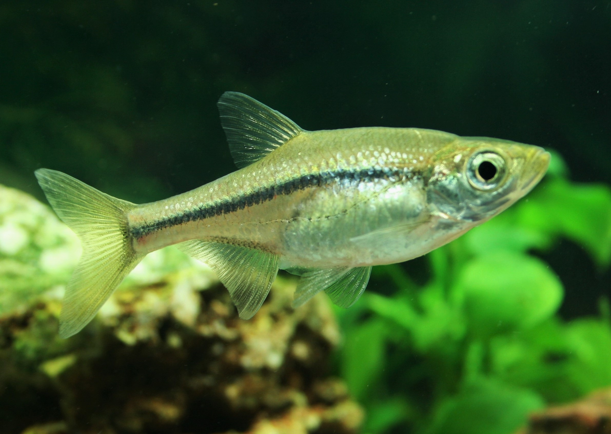
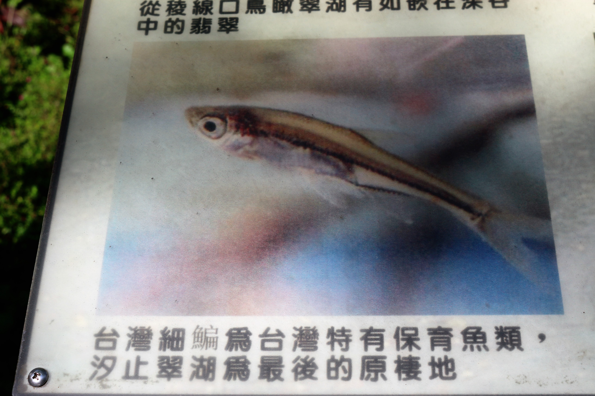
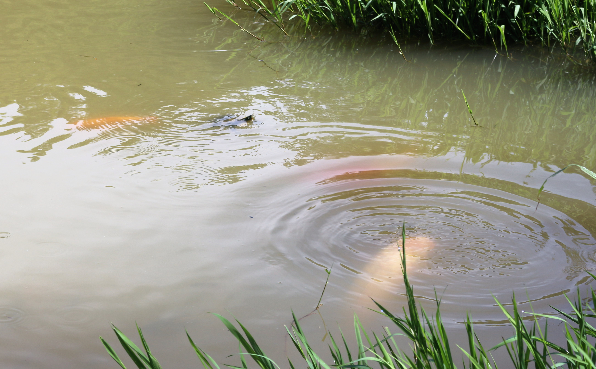
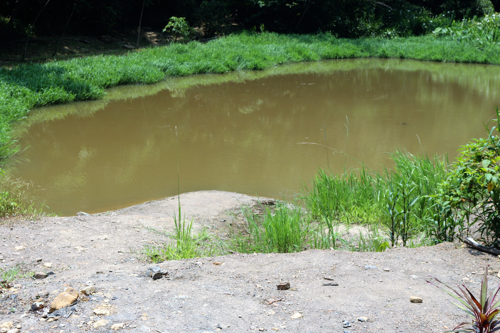

被迫搬家的台灣細鯿

台灣細鯿在民國98年被列入保育類動物。照片提供/鍾宸瑞
其中，屬於台灣特有種的保育魚類「台灣細鯿」，就差一點無聲無息地在地球上消失。
台灣細鯿早期廣泛分布在北部地區，生活在埤塘湖泊或河川中下游的緩水區，喜歡待在湖水透明度低、水生植物叢生處。身長5-8公分，身體側邊一條黑色紋路是牠的特徵。
然而，受到棲地破壞與外來種入侵，台灣細鯿一路從北部湖泊溪流，退守到汐止翠湖，最後到被嚴格保護的夢湖，才得以生存。
台灣細鯿僅存自然棲地 翠湖宣告失守
沿著金龍湖往北走約20分鐘到達翠湖登山口，再爬一段步道便抵達翠湖。翠湖是早期礦坑用水需求而開挖的人工湖，後來成為一處觀光景點，早上也能見到附近居民來此運動。

翠湖旁的解說牌。攝影/楊孟軒
一旁的解說牌上告訴民眾，翠湖是台灣細鯿僅存的自然棲地。但諷刺的是，現在的翠湖，一尾台灣細鯿都看不到。
湖中三、四頭烏龜浮上水面，肉眼可見幾條體型肥大的錦鯉悠游，岸邊幾條吳郭魚靜靜休憩。一旁民眾剝下手中的麵包屑餵食，湖面頓時一陣暄亂。

翠湖早已被錦鯉、吳郭魚、巴西龜等外來物種入侵，生態樣貌產生劇變。攝影/楊孟軒
台灣原生魚保育協會理事、裕民國小老師鍾宸瑞，曾在民國90年到翠湖做過生態調查。「當時翠湖生態蠻豐富的，可以發現台灣細鯿、齊氏石鮒、蓋斑鬥魚、極樂吻蝦虎、秀麗白蝦，還有一些不錯的水草。」
幾年後，鍾宸瑞過回去調查，幾乎就找不到這些魚，只有吳郭魚、錦鯉、巴西紅耳龜，翠湖已經被外來種入侵，台灣細鯿消失無蹤。鍾宸瑞解釋，台灣細鯿會將卵黏著在水草上，而入侵的外來魚類會吃掉水草，將台灣細鯿繁殖媒介處理掉，族群數量減少，瀕臨滅絕。而比較兇悍的外來種甚至直接把小魚和成魚吃掉。
此外，當地居民希望把翠湖弄得整齊漂亮，把湖岸邊植披改成景觀式植物，下雨時邊坡泥土就沖刷到湖中，慢慢淤積。湖岸邊供台灣細鯿生活的水草也被掩埋，翠湖因泥土淤積，面積漸漸變小，水也變淺許多。

翠湖面積因泥沙淤積，越來越小。攝影/楊孟軒
翠湖的周圍的樹林與草叢看似保留了原始生態，甚至還能見到台灣藍鵲在此築巢。但民眾、釣客將外來強勢物種放入翠湖，湖面下的生態，早已和一般的觀賞水池沒什麼不同。
原本被視為台灣細鯿最後棲地的翠湖，也找不到台灣細鯿的蹤影。
政府力道不足 民眾觀念未全 原生魚悲歌難止
台灣細鯿經歷的顛頗路，是很多原生淡水魚正在或即將面臨的命運。民眾沒有建立正確觀念，加上政府能力有限，越來越多台灣原生魚遭遇危機。
陳義雄直言，台灣人只重視水上文明，水底下長什麼樣子根本不在乎。「池子裡只要有魚在游就好，不管那是什麼魚。整建河道也用水泥，岸邊水草無法生長，魚要怎麼存活?」
當年陳義雄等學者為台灣原生魚做生態調查、發表紅皮書。但從出版到現在，農委會林務局也僅請他到金門拯救過大鱗梅氏鯿一種魚類。對其他受到威脅的魚類，沒有採取其他措施。
而民眾持續將飼養的魚隨意遺棄在池塘;釣客為追求上鉤的快感，將兇猛外來魚種放入湖泊;宗教團體大量購入魚類不當放生，台灣原生淡水魚，正因人類的行為在我們看不到的水底掙扎著。
政府缺席、民眾保育觀念又尚未建立，台灣原生魚的悲歌，將會一再被重奏。
 夢湖雖為私人湖泊，卻因為妥善管理保有原始生態。攝影/楊孟軒
夢湖雖為私人湖泊，卻因為妥善管理保有原始生態。攝影/楊孟軒